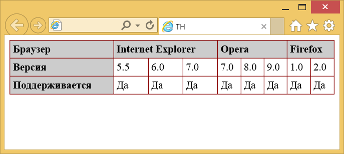

Элемент <th>
| Internet Explorer | Chrome | Opera | Safari | Firefox |
| 3 | 1 | 3.5 | 1 | 1 |
| Android | Firefox Mobile | Opera Mobile | Safari Mobile |
| 1 | 1 | 6 | 1 |
Элемент <th> предназначен для создания одной ячейки таблицы, которая обозначается как заголовочная. Текст в такой ячейке отображается браузером обычно жирным шрифтом и выравнивается по центру. Элемент <th> должен размещаться внутри контейнера <tr>, который в свою очередь располагается внутри <table>.
Синтаксис
<table>
<tr>
<th>...</th>
</tr>
</table>Закрывающий тег
Аттрибуты
- abbr
- Краткое описание содержимого ячейки.
- align
- Определяет выравнивание содержимого ячейки по горизонтали.
- axis
- Группирует ячейки связанные между собой похожей информацией.
- background
- Задает фоновый рисунок в ячейке.
- bgcolor
- Цвет фона ячейки.
- bordercolor
- Цвет рамки.
- char
- Выравнивает содержимое ячейки по заданному символу.
- charoff
- Смещает содержимое ячейки относительно заданного символа.
- colspan
- Объединяет горизонтальные ячейки.
- headers
- Позволяет связать ячейки таблицы с заголовками в речевых браузерах.
- height
- Высота ячейки.
- nowrap
- Запрещает перенос строк.
- rowspan
- Объединяет вертикальные ячейки.
- scope
- Позволяет связать ячейки простой таблицы с заголовками в речевых браузерах.
- valign
- Выравнивание содержимого ячейки по вертикали.
- width
- Ширина ячейки.
Также для этого элемента доступны универсальные атрибуты и события.
Пример
<!DOCTYPE HTML PUBLIC "-//W3C//DTD HTML 4.01//EN"
"http://www.w3.org/TR/html4/strict.dtd">
<html>
<head>
<meta http-equiv="Content-Type" content="text/html; charset=utf-8">
<title>TH</title>
<style type="text/css">
table {
border-collapse: collapse; /* Отображать двойные линии как одинарные */
}
th {
background: #ccc; /* Цвет фона */
text-align: left; /* Выравнивание по левому краю */
}
td, th {
border: 1px solid #800; /* Параметры границы */
padding: 4px; /* Поля в ячейках */
}
</style>
</head>
<body>
<table width="100%" cellspacing="0" border="1">
<tr>
<th>Браузер</th>
<th colspan="3">Internet Explorer</th>
<th colspan="3">Opera</th>
<th colspan="2">Firefox</th>
</tr>
<tr>
<th>Версия</th>
<td>5.5</td>
<td>6.0</td>
<td>7.0</td>
<td>7.0</td>
<td>8.0</td>
<td>9.0</td>
<td>1.0</td>
<td>2.0</td>
</tr>
<tr>
<th>Поддерживается</th>
<td>Да</td>
<td>Да</td>
<td>Да</td>
<td>Да</td>
<td>Да</td>
<td>Да</td>
<td>Да</td>
<td>Да</td>
</tr>
</table>
</body>
</html>Результат данного примера показан на рис. 1.

Рис. 1. Вид ячеек, оформленных с помощью стилей
Спецификация ?
| Спецификация | Статус |
|---|---|
| HTML5 | Рекомендация |
| HTML 4.01 Specification | Рекомендация |
Спецификация
Каждая спецификация проходит несколько стадий одобрения.
- Recommendation (Рекомендация) — спецификация одобрена W3C и рекомендована как стандарт.
- Candidate Recommendation (Возможная рекомендация) — группа, отвечающая за стандарт, удовлетворена, как он соответствует своим целям, но требуется помощь сообщества разработчиков по реализации стандарта.
- Proposed Recommendation (Предлагаемая рекомендация) — на этом этапе документ представлен на рассмотрение Консультативного совета W3C для окончательного утверждения.
- Working Draft (Рабочий проект) — более зрелая версия черновика после обсуждения и внесения поправок для рассмотрения сообществом.
- Editorʼs draft (Редакторский черновик) — черновая версия стандарта после внесения правок редакторами проекта.
- Draft (Черновик спецификации) — первая черновая версия стандарта.
Особняком стоит живой стандарт HTML (Living) — он не придерживается традиционной нумерации версий, поскольку находится в постоянной разработке и обновляется регулярно.